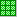
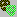
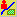

| Button | Purpose |
|---|---|
Add Layer Add a new layer to the map. | |
Reload Layer Reload the current Layer, with any data analysis and processing being applied to take into account changes to the layer properties, so that the layer becomes the active Layer. | |
Output Coordinate System Define the output coordinate system for the map. | |
Layer Loading Define the layer loading strategy for the map. | |
Create Output Map Use the currently defined project settings to create an output map for use in run-time applications. | |
Add Dataset Add a dataset to the current layer. | |
Filtering Apply data reduction by filtering the lines and polygons in the layer, removing coordinates as appropriate | |
Output Clipping Define the clipping (in the output coordinate system) to be applied to the layer. | |
|  | Tiling Define how many separate tiles will be created in the output map for the layer. |
Define Layer Zoom Range Drag a rectangle to define the minimum zoom factor at which the layer will be activated in the output map, for the case that a resolution-based loading strategy is being used. | |
Add Data Add one or more data files to the current dataset. | |
Input Clipping Define the clipping (in the input coordinate system) to be performed on all files in the current dataset. | |
|  | Feature Masking Define the feature masking that removes selected features in the current dataset from consideration by MapLink. |
|  | Data Properties Access extend and composition information concerning the data. |
Feature Book Open the Feature Book |